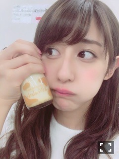

| 2016/11 26 Sat | 斎藤ちはる 同一人物。 |
ちはるーむへようこそ！
朝起きたら自分が男の子みたいで
びっくりした。
すっぴんだと顔が急に幼くなるときもあれば
男の子っぽくなってしまうときもある。
何故だろう？
自分でも驚きです(_ _).｡o○
これが同一人物だとは...(°_°)笑
でも髪型やメイクで
全然違う雰囲気に変われるのは
女の子の特権だと思う◎
楽しいね(﹡ˆ ˆ﹡)
---------------------------♡
◎Chihafood◎
今日は握手会の日に差し入れで頂いた
このプリンを紹介します！

パティシエ エス コヤマ さんの
小山プリン！
とろっとろで、
私の好みのタイプのプリンでした。
硬めか柔らかめかと言われたら
柔らかめのプリンが好き。
卵もとろとろ派。
半熟たまごや温泉たまごが好き。
甘さもちょうど良くて
ずっと食べていたい美味しさ！
皆さん是非(﹡ˆ ˆ﹡)
---------------------------♡
♬ ChihaMusic
「花になれ」flumpoolさん
普通サビは1番の中に1回だけど
この曲は1番の中に2回もあって
独特なメロディーになっている。
それだけ聞くと変わっているけど
聞いてみるとしっくりくる。
他とは違う個性が好きです。
歌詞も素敵。
"いつのまにか 傷つくことが怖くなって
まだ蕾のまま
光の射す場所をずっと探してる
明日もきっと"
何かに迷い続けながらも
必死に生きようとする姿に
共感できるし頑張ろうと思える。
2人とも寄り目してみたんだけど...
きいは頑張ってるけど
私はふざけてるのか！？というくらいに
出来てない。笑
昔から寄り目が苦手なの( ´ｰ`)
おやすみ〜
斎藤ちはる